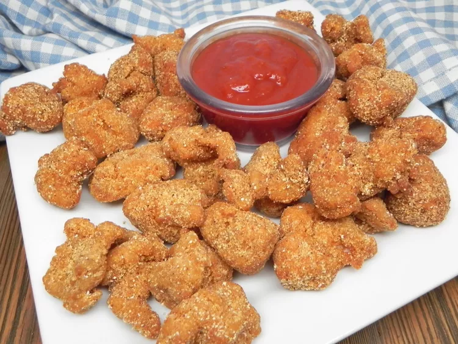

Alligator Nuggets

Description
Fried alligator nuggets don't get any easier than this and they are restaurant-quality.
Serve with cocktail sauce, Sriracha, mayo, whole grain mustard, or any dipping sauce you choose.
Prep Time: 10 Mins
Cook Time: 10 Mins
Total Time: 20 Mins
Servings: 4 Servings
Ingredients
- 4 cups vegetable oil
- 5 ounces seasoned crispy fish fry seafood breading mix
- 1 pound Louisiana alligator prime filet, cut into 2-inch cubes
Steps
- Heat oil in a deep-fryer or large saucepan to 350 degrees F (175 degrees C).
- Pour fish fry mix into a 1-gallon resealable plastic bag. Add alligator nuggets, reseal the bag, and shake to coat. Let stand for 5 minutes. Shake the bag again.
- Place half of seasoned alligator nuggets in the deep fryer. Cook until golden brown and nuggets float to the top of the oil, about 3 minutes. An instant-read thermometer inserted in the center should read at least 160 degrees F (70 degrees C). Using tongs, transfer nuggets to a paper-towel lined plate.
- Repeat Step 3 with remaining nuggets. Serve immediately.